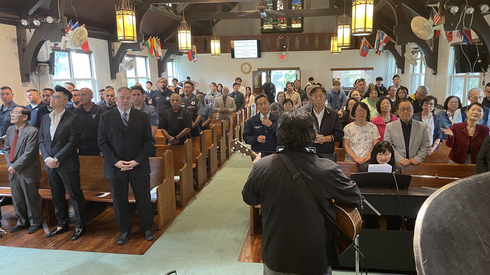
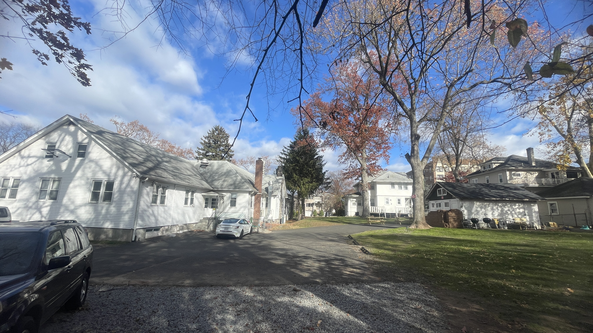
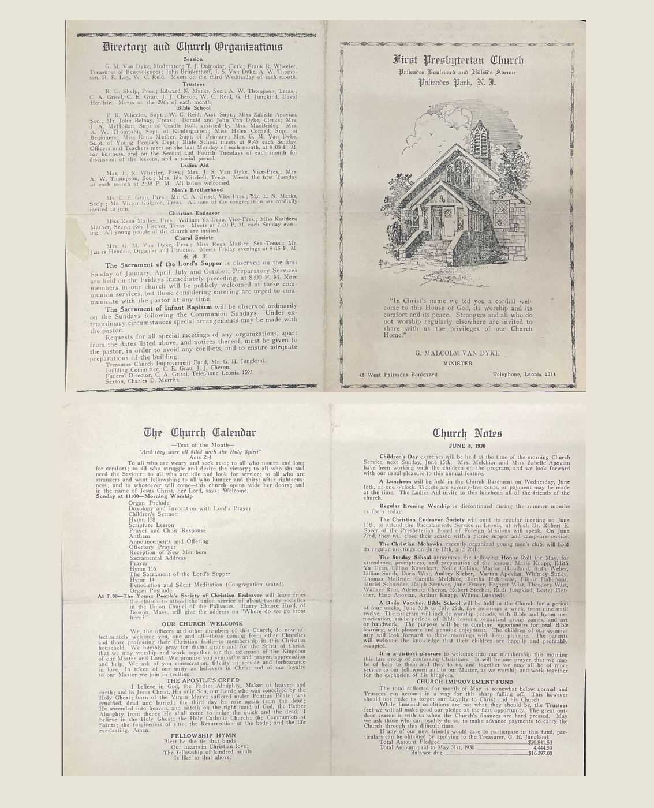

Congregation
One body, many languages
This congregation has belonged to Palisades Park since Union Chapel. It peaked at 282 members in 1930, walked through lean decades, and opened again in the 1980s as a multi-ethnic house of prayer. We are growing again today.
Rev. David Peng is the thirteenth pastor. Called as an inquirer on October 1, 2000 from a United Methodist background, he was ordained and installed on May 2, 2004. Under his leadership the church kept four Sunday services and founded ministries that still mark the town.

How the family gathered
- 1982–1983. Pastor Chu-Yih Huang found the unused Presbyterian building on a Spirit-led walk. Elder Mike Kelly opened the door. In March 1983, 23 members of the former Formosan Presbyterian Church joined. Bilingual worship began May 25, 1983 under Rev. William A. Carhart.
- 1987–1988. Pastor Gretchen Janssen, the only woman to serve as presiding pastor in the church’s first century, completed a mission study so the congregation would reflect the town’s ethnic picture and could call a bilingual pastor.
- 1989–1999. Rev. Jack Chiang of Canada served as the twelfth pastor, renovating the building and leading youth.
- 2000–now. Rev. David Peng. English worship (2001); Mandarin worship; Korean worship with Crystal Presbyterian Church and Rev. Victor Moon (2003); Hispanic congregation under Pastor Teresa Delgato (2004).
Between 2000 and 2008 average attendance grew from 54 to 109, and children’s ministry from 2 to 28. The budget grew with the work. Ten percent of tithes go outward.


Pastors of this pulpit
The church remembers a line of shepherds, including Rev. George Brinton Hassey (1954–1959), Rev. John Edward Bauer (1961–1980), Rev. William A. Carhart (1983–1986), Pastor Gretchen Janssen (1987–1988), Rev. Jack Chiang (1989–1999), and Rev. David Peng (2000–now). Earlier years include Rev. Janvier J. Louderbough, who led the wartime roof repair and received the Edsall bell.